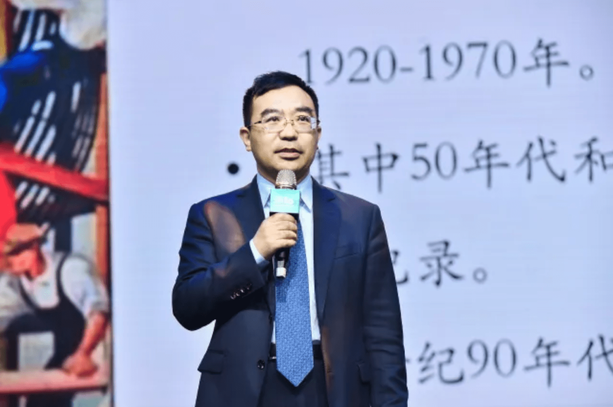

2018/4/28
9年前的一个夏夜，苏鑫仰望星空，思考着这个世界和自己的未来。随后他做出了创业的决定。彼时的苏鑫人近中年，在明星房企SOHO中国担任主管营销的副总裁。
9年之后，苏鑫创办的高和资本已成为国内最大的商业地产私募股权基金，也是不动产证券化最重要的开拓者和引领者。有没有之一？谦虚地说，有；直率地说，没有。
截止目前，高和资本在商业不动产领域总投资额超过360亿元，并完成不动产证券化产品（包括CMBS和REITs）约238亿元。从最初的旧楼改造开始，如今高和资本已初步形成“资产管理与并购基金、价值实现与资产证券化、创新内容投资与轻资产基金”三大业务板块。
2018年，高和资本战略升级，将全力构建相融共生的高和城市更新资产管理价值新生态，打造领先的城市更新投资机构。
此时，苏鑫和他的朋友们，又把目光投向了未来：2035年的中国城市和生活会是什么样的？互联网、大数据、人工智能的加速发展，多元融合新物种倍出，极致的全场景应用体验不断推新，人类生活方式和城市空间，正在以前所未有的速度被重新塑造。
在刚刚结束的“2035投资未来城市论坛暨2018高和投资人大会”上，经济学家、城市与建筑学家、跨界设计师、投资人、城市更新创新实践群体齐聚一堂，从艺术、金融、科技等多个维度预言和解读2035未来城市，判断和把脉变革时代的投资机遇。
各路嘉宾给出的答案，既令人兴奋，也令人忧惧，但我们别无选择，必须应对。
让我最有感觉的预测有四个，来自经济学家何帆和高和资本合伙人苏鑫，他们认为未来20年的中国；
1、老年人用的尿布产量将超过婴儿用的尿布产量，养老会出现革命性技术进步，这一代人可能成为机器人养老的第一批实验品；
2、人类平均寿命100到150岁，这对于中年的我很重要；
3、科技进步，机器翻译非常方便，学外语的人会越来越少，这对于我的后代很重要；
4、中国已经没有劳动力廉价优势，但还有廉价科学家和工程师的优势。这对于房价很重要；
5、看空中国经济的理由是：一因人口老龄化加速，二因结构转型加快，以制造业为主转为服务业越来越多。这种转变是双刃剑：中国经济会变得更加稳定，但服务业劳动生产力提高的速度慢，投资边际收益递减；
6、对中国经济乐观的理由不是新的动能，而是已知变量。变量一是工业化升级换代。深圳手机公司“传音”，去年在非洲销量达到1亿部，据说今年会卖出1.6亿部，非洲市场，传音排名第一，三星第二，华为第三。变量二是城市化。中国的城市化已走到了一半，一线城市进入停滞期，二线城市进入改进期。而未来的乡村振兴会给城市发展带来巨大影响。变量三是创新。未来创新至少有一半以上会出现在中国；
7、创新会变种：过去是“穷者”创新，如整合创新降成本；如流程创新，流水线（技术进步优势）加熟练工人（廉价劳动力）。现在的创新将是“混搭”创新，把存在的事物用别人没有想到的方式重新混搭对接起来；
8、劳动力密集型的技术创新：劳动力廉价优势已过去，但廉价科学家和工程师的优势将到来；
9、市场引致型的技术创新。如高铁革命性的创新源自德国和日本，但中国人修的最好。因为中国市场化和商业化的规模大。同样道理，全球治理雾霾最先进的技术最终一定出在中国；
10、中国的风险很可能不出现在经济领域，而出现在社会或者其他领域。未来我们需要释放经济增长的能力，但更要把握社会风险；
11、从地缘政治角度看，战争冲突不断，导致更多的国家分裂，整个地球会超过250个国家和地区。
12、中国处在拐点时代，60后掌握了最多的钱和资源，但是他们不代表未来了，有创造的90后和00后们会用60后的钱洗牌60后；
13、关注投资和未来，才有可能取得更好的收益；
14、投资具有多重属性，如共性与个性、收益与风险、理性与感性。投资成功与否，首先不在于选择的具体项目、时间和投资技巧，而在于把握未来的趋势；
15、房地产业三大趋势：由开发向存量转化、由制造业向服务业转化、由线下向线上转化；
16、中国持续稳定发展的三个核心力量，第一是城市转型；第二是消费升级；第三是存量盘活，这正是城市更新要解决的问题；
17、城市更新把低效资产起来，需要三把动能钥匙：体验、场景和情怀。以下分述：
18、体验：比如无人超市，新零售代表着未来，能满足未来消费者的升级需求；
19、场景：比如共享大堂，一个空间里能喝咖啡、能办公、能开会、网红店参能展示，变成白领线下交流、互动、学习和工作的空间。资产价值不在于装修高大上，而在于能不能把空间变成一种场景；
20、情怀。两个预测：一是传统办公将消失，纸币将被数字货币所取代，人类平均寿命100到150岁。二是上市地产50强，50%是创新服务业企业，公募市值超过千亿者超过10家，地产基金公司管理规模超千亿者超过5家；
21、互联网时代，城市形态非中心化。快递、外卖和便利店，使原来集中化的城市资源分散化，呈现出城市碎片化、组织自发化、公共空间的微型化等趋势；
22、图书馆和博物馆的衰败，种种实体空间的衰败，乃至整个城市区域的衰败都是未来将面临的严峻挑战；
23、新技术将促进中国人口和资源向资本加速更高效的城市凝聚，失去资本和技术加持的城市将沦为物联时代的新农村；
24、借助物联网的力量，人工智能将存在于城市空间的每一个场景，城市成为包容人类生活的超级大脑；
25、硅基文明与碳基文明将会以“硅碳合基”的方式长期共存，城市也将同时占据硅基虚拟与碳基实存的双重场域，成为硅碳合基的整合系统；
26、2035年，中国将有一部分城市实现“初级灵镜化”，个别城市覆盖“全域灵境化”。“灵境化”技术壁垒将促进中国城市加速分化；
27、城市是文化的容器，内容远比容器更有价值。未来城市最大的机遇在于生活方式的“范式转型”，城市中最小单元“社区”就是创新转化的最佳实验室；
28、城市更新是系统性工程，需要政府、企业、金融机构共同努力。一是政府需要在规划土地方面给予更多支持；二是企业自身要有创意、有团队和坚持不懈的心态；三是金融机构要给企业相应的融资支持；
29、在未来十到二十年之内，中国不动产证券化一定会形成几十万亿甚至更大规模的市场；参与主体多元化，除了银行外，以夹层和裂缝为主的投资机构，也必将迎来极佳的投资机会；
30、资产证券化和夹层的投资机构之间有天然的联系，夹层或者裂缝部分份额的出售是资产证券化主体能够实现增值出表的表现，买卖双方实现共赢；
31、虽然地产金融创新花式不少，REITs也只是类REITs。由于融资难、资金贵、不动产流动性欠佳，再加上监管政策，融资规模会受限，但只有一扇窗户始终开着，那就是证券化，这是实现资产价值流通或变现的最好解决方案；
32、2035年，中国商业银行与投行业务越来越混合，综合化经营的特征会越来越强；
33、城市更新，要有地产思维，也要去地产思维。前者指仍要对每个地段进行精准研究报批；后后者它没有过去开发商那么高的利润，必须有耐心、努力和薄利润意识；
34、对基金来讲，“投、融、管、退”都是挑战，但核心还在管和退。只有管好才可能融资，才可能退出去，才可能有现金流，才可能吸引挑剔的投资人。金融的本质就是现金流；
35、资产证券化发展艰难的原因：一是国内主流金融机构对于REITS产品还不是特别接受，以放贷款思路来做，对传统路径过度依赖；二是很多投资人认为中国经济过度互联网化，不看好商业地产的发展；三是高利率；
36、城市更新过程中，运营团队和资本团队都应该关注商业地产重资产、长周期、复合性的特征；同时，商业情怀也是决定项目成功与否的重要因素，因为运营周期长得多；
37、城市更新已从浪潮转为常态，从具体商业要素来说，一是做重资产投资，钱必须是长钱；二是重资产投资还是轻资产运营，需要企业根据自身资源禀赋的判断进行选择，包括资金特性、硬件改造、资产配置等；
38、城市更新是持续发展的、常态化的行业。要把市场和区域研究透，定位精准到极致，才能把整个商业周期研究全面，更精准地评估从投资、开发、经营到最终的经营收益和资产价值；
39、国内基金过去的特点，一是散，尤其是机会型的投资，不从整个行业的趋势去看。二是房地产基金是以投债为多，投股为少。三是时间短，而且很难募到基金，在国内募到5+2就很难了。未来要对标黑石和华平的系统性和平台性，运作10+2的基金；
40、租房行业信息严重不对称，如果有一家公司在追求“真实房源”，那它就有做到一千亿市值的机会。
附：“2035投资未来城市论坛暨2018高和投资人大会”嘉宾名单
著名建筑评论家周榕、同济大学设计创意学院院长娄永琪、国开金融副总裁左坤、华融融德前董事长现朗姿韩亚创始人袁怀中、上海银行北京分行行长陈力平、嘉德集团董事长黄晓华、金茂资本CEO周立烨、红星美凯龙执行总裁郭丙合、高和资本执行合伙人周以升、中粮集团朝阳大悦城总经理李瑞、华融融德总经理 黄春雨、春光集团董事长王启春、翰同资本创始人王倩、嗨住创始人夏青宁、铺天地联合创始人易宗元、乐乎创始人罗意、创享DNA咖啡王柯翔、牛办科技CEO胡涛、会唐网联合创始人、联合总裁唐亮、HIWORK CEO 贾蓉、张映光/ 庄凌控股创始合伙人、陈方勇/ 佰仕慧城市更新研究院院长
2018/4/28